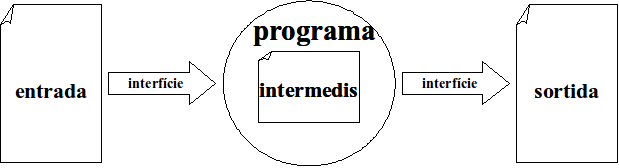

Instruccions de declaració de variables¶
Ens permeten declarar les dades amb que treballarem dins el programa
Recordem: Una dada no literal, dins un programa porta associat:
- un identificador: per referenciar la dada
- un tipus: indica els valors vàlids que pot presentar la dada
- un àmbit: part del programa on la dada pot ser referenciada
- un valor: dins dels valors vàlids
- una posició de memòria
A partir de la definició és pot conèixer quan ocuparà en memòria la part de dades del programa.
Des de la perspectiva de les dades, un programa és només:
Les variables ens permetran emmagatzemar:
- les dades d’entrada al programa
- les dades resultants de càlculs intermedis dins el programa
- les dades finals de sortida del programa
En seudocodi¶
En pseudocodi considerem els següents exemples de declaracions de variables:
var i és numèric
var i, j són enters
var x, y són reals
var ch és caracter
var resposta és caracter
var text és string
var es_modificat és booleà
En Java¶
En Java la declaració de variables és similar a la del pseudocodi. Els exemples anteriors en Java tindrien el següent aspecte:
int i;
int i, j;
double x, y;
char ch;
char resposta;
String text;
boolean es_modificat;
De seguida veiem que hi ha exemples que són pràcticament iguals entre
pseudocodi i Java, a banda de la permutació tipus nomvariable i el
punt i coma final.
Alguns dels tipus de dades bàsics en Java són:
| Tipus | Descripció | num bytes (8 bits) | Rang |
|---|---|---|---|
byte |
enter (petit) | 1 | -128 a 127 |
short |
enter (mitjà) | 2 | -32.768 a 32.767 |
int |
enter | 4 | -2^31 a 2^31-1 |
long |
enter (llarg) | 8 | -2^63 a 2^63-1 |
char |
caràcter | 2 | Permet representar Unicode de 16 bits (65,635 valors) |
boolean |
booleà | No està definit | |
float |
real (petit) | 4 | Per decimals petits |
double |
real (gran) | 8 | Per decimals grans |
String |
string | Depén del text | |
void |
cap tipus | No guardarem cap void! |
void És un tipus buit que indica que el que defineix quelcom sense tipus.[1]
En Python¶
La declaració de variables en Python pot resultar-nos una mica més fàcil. Simplement no cal declarar les variables explícitament! Python és prou llest per fer-ho per nosaltres en el moment que fem servir una instrucció d’assignació.
| [1] | A aquestes alçades del curs, pot resultar molt estrany
l’existència del tipus void per indicar que no hi ha tipus. Aquest «tipus» pendrà sentit
més endavant quan parlem d’el concepte de subrutina. |